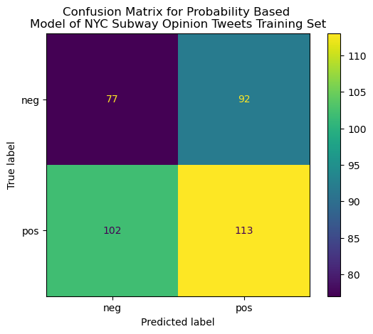
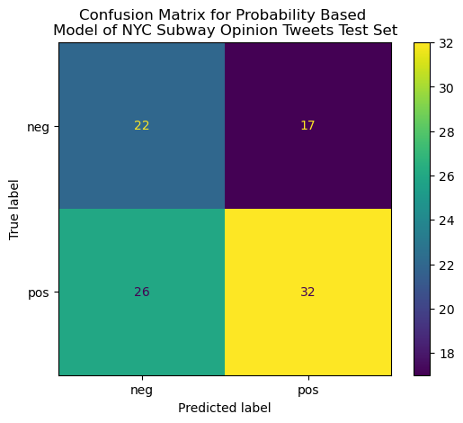
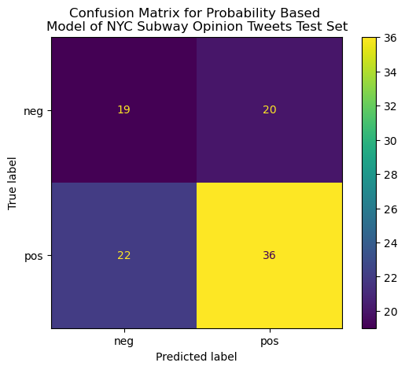
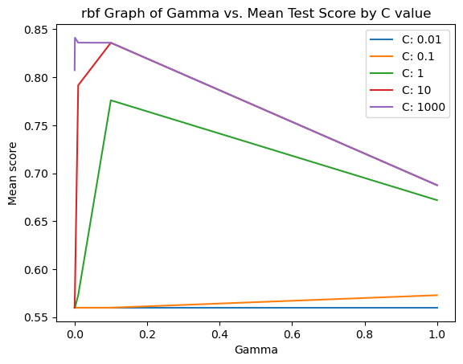
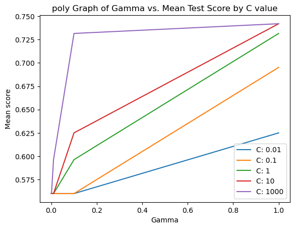

# Convert df to list of stringscorpus = df['text'].tolist()# Assign numerical codes to categoriesdf['category'] = pd.Categorical(df['category'])df['label'] = df['category'].cat.codesy1 = df['label'].to_numpy()labels = ['neg','pos']
Code
# Vectorize corpus textvec = CountVectorizer(min_df=0.001)all_x = vec.fit_transform(corpus)X=np.array(all_x.todense())# one hot encodingmax_x=np.max(X,axis=0)X=np.ceil(X/max_x)
# Model determined by probabilities of positive and negative in the training data# proability of negative opinion in training data setp_neg_train =len(y_train[y_train==0])/len(y_train)#print(p_neg_train)# Randomly drawn array from uniform distribution based on above probability that serves as a predictionyp_train = np.random.choice(np.arange(0,2),p=[p_neg_train,1-p_neg_train],size=len(y_train))# Predict based on same probability for test data setyp_test = np.random.choice(np.arange(0,2),p=[p_neg_train,1-p_neg_train],size=len(y_test))# Training setcm = confusion_matrix(y_train,yp_train)cm_plot = ConfusionMatrixDisplay(cm,display_labels=labels)cm_plot.plot()plt.title("Confusion Matrix for Probability Based \nModel of NYC Subway Opinion Tweets Training Set")plt.savefig("../../501-project-website/images/CONFUSION-MX-PBased-train-Opinion-Tweets.png")# Test setcm = confusion_matrix(y_test,yp_test)cm_plot = ConfusionMatrixDisplay(cm,display_labels=labels)cm_plot.plot()plt.title("Confusion Matrix for Probability Based \nModel of NYC Subway Opinion Tweets Test Set")plt.savefig("../../501-project-website/images/CONFUSION-MX-PBased-test-Opinion-Tweets.png")# Print classification reportprint("CLASSIFICATION REPORT FOR TRAINING SET")print(classification_report(y_train,yp_train,target_names=["neg","pos"]))print("CLASSIFICATION REPORT FOR TEST SET")print(classification_report(y_test,yp_test,target_names=["neg","pos"]))
CLASSIFICATION REPORT FOR TRAINING SET
precision recall f1-score support
neg 0.45 0.44 0.44 169
pos 0.57 0.58 0.57 215
accuracy 0.52 384
macro avg 0.51 0.51 0.51 384
weighted avg 0.52 0.52 0.52 384
CLASSIFICATION REPORT FOR TEST SET
precision recall f1-score support
neg 0.39 0.28 0.33 39
pos 0.59 0.71 0.65 58
accuracy 0.54 97
macro avg 0.49 0.49 0.49 97
weighted avg 0.51 0.54 0.52 97


The above probability-based model is clearly a poor classifier of the sentiments of the MTA-related tweets given by the poor accuracy, precision, and recall scores across the board (all in and around 50%). This is not surprising considering that predictions for this model are entirely random, based on the existing proportions of positive and negative labelled tweets in the training data set. Thus, a more complex and specific model must be used to classify these tweets, so I will build a Support Vector Classifier (SVC) model and analyze its effectiveness compared to the probability-based model constructed above.
C, Gamma, Kernel Hyperparameter Tuning
However, in order to find the optimal SVC model to classify the MTA-related tweets, there are certain hyperparameters (i.e., user-defined inputs) that affect how a given SVC model fits a given set of data. Hyperparameters are independent of any training/validation/test data set, and must be determined by the individual constructing a given model. For the SVC type of model, these hyperparameters/choics are C, Gamma, and the kernel. Firstly, the C hyperparameter controls to what extent the model tries to avoid misclassifying observations, with a larger C value leading to the model to try to correctly classify more points, which leads to the risk of overfitting. However, a C parameter that is too low will lead to the resulting model having low accuracy and high rates of misclassification. The kernel choice determines what type of mathematical function the SVC model uses to find its resulting decision hyperplane. Different sets of data may be classified more effectively with differing types of functiosn as their baseline, which indicates that investigating models with differing kernel choices is necessary to find an optimal model. Finally, the gamma parameter essentially controls the curvature of the constructed decision hyperplane, with a high gamma enabling the SVC model to have a more curved decision barrier. This gamma parameter is only truly relevant for RBF (radial basis function) SVC models.
In order to investigate what set of parameters is most optimal for classifying the sentiments of the MTA-related tweets cleaned and explored in prior sections of this project, many combinations of these three parameters must be tested. To do this, I will perform a grid search where models are systematically constructed with differing combinations of parameters and their respective measures of accuracy, precision, etc. are internally calculated. The code that accomplishes this process can be found below.
Code
kernel_list = ['linear','rbf', 'poly', 'sigmoid']Cs = [0.01,0.1,1,10,1000]gammas = [1,0.1,0.01,0.001,0.0001]for kernel in kernel_list:# Code adapted from https://www.vebuso.com/2020/03/svm-hyperparameter-tuning-using-gridsearchcv/ param_grid = {'C': Cs, 'gamma': gammas} grid = GridSearchCV(SVC(kernel=kernel),param_grid,refit=True) grid.fit(x_train,y_train) grid_predictions = grid.predict(x_test)# Plot of grid search results# Code adapted from https://stackoverflow.com/questions/37161563/how-to-graph-grid-scores-from-gridsearchcv scores = grid.cv_results_['mean_test_score'] scores = np.array(scores).reshape(len(Cs), len(gammas))for ind, i inenumerate(Cs): plt.plot(gammas, scores[ind], label='C: '+str(i)) plt.legend() plt.title(kernel+' Graph of Gamma vs. Mean Test Score by C value') plt.xlabel('Gamma') plt.ylabel('Mean score') plt.show()

Code
print("The ideal parameters for this model based on a grid search is:",grid.best_estimator_)
The ideal parameters for this model based on a grid search is: SVC(C=10, gamma=0.1, kernel='sigmoid')
From the graphs above, we can see the differing mean test scores (i.e., how “good” the built model is for the training data set) by the differing kernel choice, with different colored lines in accordance with the different tested C values. From analyzing these graphs, an “optimal” set of parameters was found and these are printed above. Thus, our final SVC model will be parameterized by those three parameters (C=10,gamma=0.1,kernel=sigmoid). The graph of the differing mean test scores for the sigmoid kernel hyperparameter tuning contains the maximum mean test score across all kernels and C values at the three parameters printed above. More detailed outputs on the resulting “optimal” model and associated accuracy, precision, recall, etc. measures are generated below.
Final Results
Code
# SVC Model# Normalize data and fit modelpipeline = make_pipeline(StandardScaler(),SVC(C=10,gamma=0.1,kernel='sigmoid'))pipeline.fit(x_train,y_train)yp_train = pipeline.predict(x_train)yp_test = pipeline.predict(x_test)# Print classification reportprint("CLASSIFICATION REPORT FOR TRAINING SET")print(classification_report(y_train,yp_train,target_names=["neg","pos"]))print("CLASSIFICATION REPORT FOR TEST SET")print(classification_report(y_test,yp_test,target_names=["neg","pos"]))# Calculate the confusion matrix and classification report for the train and test data.cm = confusion_matrix(y_train,yp_train)cm_plot = ConfusionMatrixDisplay(cm,display_labels=labels)cm_plot.plot()plt.title("Confusion Matrix for Sigmoid SVC Based \nModel of NYC Subway Opinion Tweets Training Set")plt.savefig("../../501-project-website/images/CONFUSION-MX-PBased-train-Opinion-Tweets.png")# Test setcm = confusion_matrix(y_test,yp_test)cm_plot = ConfusionMatrixDisplay(cm,display_labels=labels)cm_plot.plot()plt.title("Confusion Matrix for Sigmoid SVC Based \nModel of NYC Subway Opinion Tweets Test Set")plt.savefig("../../501-project-website/images/CONFUSION-MX-PBased-test-Opinion-Tweets.png")
CLASSIFICATION REPORT FOR TRAINING SET
precision recall f1-score support
neg 0.80 0.81 0.80 169
pos 0.85 0.84 0.84 215
accuracy 0.83 384
macro avg 0.82 0.82 0.82 384
weighted avg 0.83 0.83 0.83 384
CLASSIFICATION REPORT FOR TEST SET
precision recall f1-score support
neg 0.81 0.67 0.73 39
pos 0.80 0.90 0.85 58
accuracy 0.80 97
macro avg 0.81 0.78 0.79 97
weighted avg 0.81 0.80 0.80 97


We can see that this model generally does a good job of classifying the sentiments of MTA-related tweets based on their word composition (after removing stop words/standardizing and other feature selection) given by the accuracy, precision, and recall scores occupying the neighborhood in and around 80% across both the training and test set predictions. The confusion matrices back up this assertion given by the number of correclty identified setniments in the main diagonal compared to false negative classifications and false positive classifications. In comparison to the probability based model constructed earlier, it is very clear that the SVC model is a better classifier of these sentiments. In order to improve the fit of this type of model, the hyperparameter tuning could accommodate more options in terms of possible C and gamma values, although such a process would be more computationally intensive and time consuming. The model does not appear to overfitted given by the similar accuracy scores between the predictions regarding the training set and those regarding the test set
Conclusions
Ultimately, from the creation of the rudimentary probability-based classification model to the hyperparameter tuning and construction of the finalized SVC model, we can see that the SVC model is a vastly superior classification model compared to the probability-based model. Given by the decent accuracy, precision, and recall scores